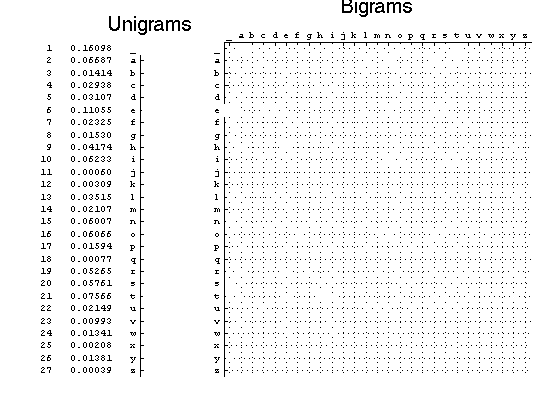

Plot unigrams and bigrams of Darwin's "On the origin of species"
loadData('ngramData');
if(0)
bigramFig = figure;
axes1 = axes('Parent',bigramFig,...
'YTickLabel', insertFront(' ', num2cell('a':'z')),...
'YTick',1.5:27.5,...
'XTickLabel',insertFront(' ', num2cell('a':'z')),...
'XTick',1.5:27.5);
hold on;
bifreq = bigrams ./ max(max(bigrams));
bifreq = [bifreq bifreq(:,27)];
bifreq = [bifreq ; bifreq(27,:)];
hintonw(bifreq);
colormap(gray(256));
axis square;
axis([1,28,1,28]);
title('Bigram Relative Frequencies');
colorbar;
end
if(1)
main = figure;
hintonDiagram(ugrams);
title('Unigrams', 'fontsize', 20);
uniAx = gca;
set(uniAx,'XTick',[],'YTick',1:27,'Color','k','Position',[0.25,0.1,0.04,0.8],'FontName','Courier');
set(findobj(uniAx,'Type','Patch'),'FaceColor','w')
set(findobj(uniAx,'Type','line'),'Color','k');
xlabel(''); ylabel(''); grid off;
letters = {'_','a','b','c','d','e','f','g','h','i','j','k','l','m','n','o','p','q','r','s','t','u','v','w','x','y','z'};
spaces = repmat(' ',27,1);
labels = [num2str((1:27)') spaces num2str(ugramsNorm,'%4.5f') spaces char(letters)];
set(uniAx,'YTickLabel',labels);
tmp = figure;
hintonDiagram(bigrams);
title('Bigrams', 'fontsize', 20);
xlabel(''); ylabel('');
biAx = gca;
set(biAx,'Parent',main,'Position',[0.4,0.1,0.55,0.8]);
close(tmp);
set(biAx,'XTick',1:27,'YTick',1:27,'Color','k','XAxisLocation','top','XTickLabel',...
letters,'YTickLabel',letters,'FontName','Courier');
set(findobj(biAx,'Type','Patch'),'FaceColor','w')
set(findobj(biAx,'Type','line'),'Color','k');
grid off;
set(main,'Color','w');
end

if(0)
fprintf('\n%10s %7s %12s\n\n','Index','Letter','Frequency');
for i = 1:length(validSet)
fprintf('%8s %6s %15s\n',num2str(i),char(validSet(i)),num2str(ugramsNorm(i),'%4.3f'));
end
end
if(0)
ugramHist = figure;
axes2 = axes('Parent',ugramHist,'XTickLabel',letters,'XTick',1:27);
hold on;
bar(ugramsNorm);
title('Unigrams');
end